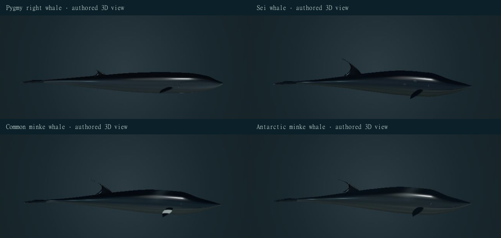
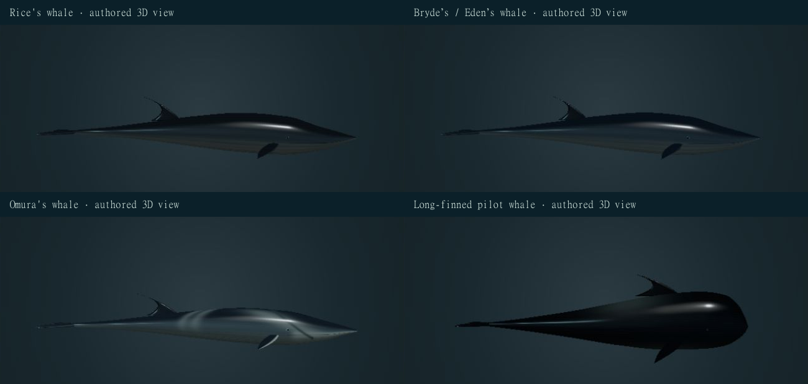
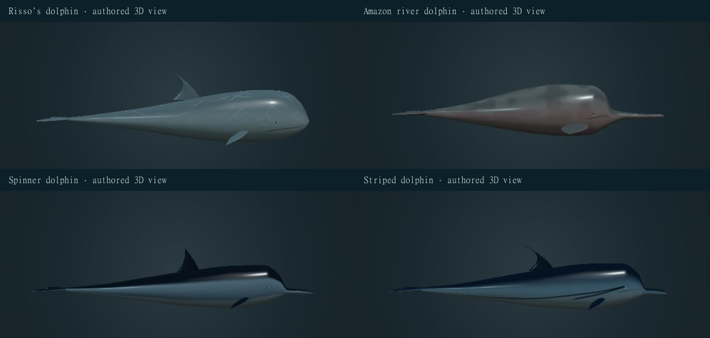
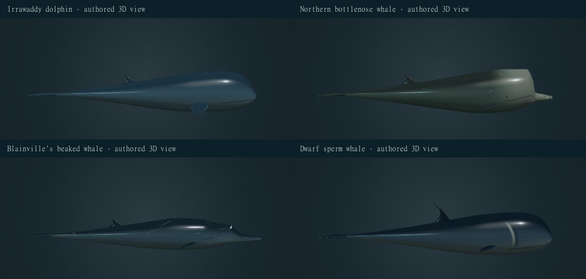

Pygmy right whale
Slender body, small head, moderately arched mouth, two shallow throat creases and a short falcate posterior dorsal fin. No Eubalaena callosities and no rorqual pleat field. Feeding mechanics are sparsely documented.
Refined heads, appendages, original skin maps and marine lighting replace the older generic surface treatment. Each animal has bounded stroke, glide and turn studies on the same retained exterior.
341 taxa retained · 16 revised records · 325 other species records unchanged. No new taxa. Bryde’s/Eden’s remains one disputed concept with two display profiles. Earlier source models and molecular records remain available.
Slender body, small head, moderately arched mouth, two shallow throat creases and a short falcate posterior dorsal fin. No Eubalaena callosities and no rorqual pleat field. Feeding mechanics are sparsely documented.
Dark blue-gray back, pale ventrum, tall hooked posterior dorsal fin and selected oval bite scars. The reference-led field uses 42 short throat grooves within the reported 30–65 range; groove count and marks vary. Sei whales can skim and gulp feed; this closed-mouth study does not simulate either process.
Selected northern common-minke phenotype with discrete white mid-flipper bands, dark back, pale underside and 56 authored throat grooves. The dwarf form has different markings. The band is not universal across all common-minke populations.
No northern common-minke mid-flipper band. The revised field uses 30 throat grooves within NOAA’s reported 22–38 range, replacing the earlier 60. Front baleen pigmentation is asymmetric in this species; a complete baleen reconstruction is not displayed.
Three rostral ridges, dark gray dorsal surface, pale ventrum and hooked posterior fin. No Omura-type asymmetric lower-jaw marking. Limited tagging supports deep daytime feeding and shallow nighttime occupancy in studied individuals; no universal feeding trajectory is inferred.
Three prominent rostral ridges and a falcate posterior dorsal fin. Both offshore Bryde and coastal Eden display profiles remain within the archive’s single disputed taxon concept. External artwork and the B. edeni mitochondrial record do not resolve the contested split.
Selected Madagascar-associated phenotype: pale right lower jaw, darker left jaw, right-sided blaze, asymmetric chevrons, pale pectoral leading edge and one main rostral ridge. The 86-groove authored field follows the reported 80–90 range. Exact pigment boundaries vary among animals.
Robust dark body, rounded adult melon, broad forward dorsal fin and long swept pectoral flippers. A selected pale ventral anchor and dorsal saddle are retained; age, sex and population affect appearance. Squid-oriented foraging uses echolocation; sound production and prey capture are not simulated.
Robust, blunt-headed adult without a projecting beak; a median melon crease, tall falcate fin and dense irregular pale scars. Juveniles are darker and less scarred. Usually only 2–7 anterior lower-jaw tooth pairs are present; no upper tooth rows are added to this closed-mouth exterior.
Long narrow beak, small eyes, broad blunt flippers and a low dorsal ridge. The selected adult is gray-pink; young animals are darker and pinkness varies. Posterior teeth differ from anterior conical teeth, so no generic conical dental arcade is substituted. The local head-turn study illustrates neck mobility without a measured joint limit.
Selected Gray’s spinner phenotype with long beak, slender body and distinct dark dorsal, gray lateral and pale ventral fields. Other subspecies differ. Aerial spinning is documented, but an unfitted underwater fluke study is not represented as a spinning leap.
Dark dorsal cape, gray lateral field, pale underside and separate eye-to-flipper and eye-to-anal pigment paths. The rounded melon and slender beak differ from the blunt-headed dolphins. Documented acrobatics do not validate an authored local swimming rate.
Rounded beakless head, broad rounded flippers, gray-blue skin and small posterior dorsal fin. The displayed taxon remains O. brevirostris; the 1993 guide predates recognition of Australian snubfin dolphin, so its Australian range and historical conservation assessment are not adopted.
Selected mature male with steep pale melon, short distinct beak, small posterior dorsal fin and two apical mandibular teeth. Females and younger males have a less developed forehead and generally lack conspicuous erupted teeth. Deep-diving physiology is described, not computed.
Selected mature male with low sloping melon, strongly arched lower jaw and paired teeth behind the beak tip. Pale linear and oval marks are individual artwork. Female and juvenile jawlines and tooth emergence differ; this male is not a universal phenotype.
Compact blunt head, small underslung mouth, pale false-gill crescent behind the eye and relatively tall central dorsal fin. The crescent is a skin marking, not a gill. Field distinction from pygmy sperm whale remains difficult; defensive intestinal fluid is not a cephalopod-like ink-gland simulation.
Selected side views of all sixteen authored exteriors. Cropped from the working browser; these images are reconstructions, not animal photographs or independent scientific validation.




All sixteen use finite twelve-second dorsoventral posterior flexion, independent fluke pitch, restrained flipper motion and neutral holds. The stroke-to-glide transition stops local motion by six seconds. Inia additionally has a small lateral head-mobility study. These are illustrative body studies, not measured speed, dive traces or solved fluid motion. Closed-mouth swimming is never relabeled as feeding. The feeding controls remain unavailable until their mechanisms are implemented.
Species accounts distinguish baleen filtration, odontocete foraging, air breathing and the limits of the displayed exterior. Oxygen stores, circulation, acoustic production, suction pressures and filtration efficiency are not simulated. Expert anatomy review remains pending.
The observatory now contains 21 animal records, including the earlier mammals, turtle and amphibians. New records retain source coordinates, complementary strands, table-2 coding annotations, hypothetical edits and FASTA/GenBank downloads. Rice’s whale uses an INSDC GenBank record; the other fifteen use RefSeq. Spinner and Irrawaddy records contain unresolved N bases, retained visibly. Each sequence describes a deposited record, not the genotype of the rendered animal.
| Species | Accession | Base pairs | Unresolved N |
|---|---|---|---|
| Pygmy right whale | NC_005269.1 | 16383 | 0 |
| Sei whale | NC_006929.1 | 16410 | 0 |
| Common minke whale | NC_005271.1 | 16417 | 0 |
| Antarctic minke whale | NC_006926.1 | 16421 | 0 |
| Rice's whale | PQ997938.1 | 16409 | 0 |
| Bryde’s / Eden’s whale | NC_007938.1 | 16409 | 0 |
| Omura's whale | NC_007937.1 | 16404 | 0 |
| Long-finned pilot whale | NC_083222.1 | 16390 | 0 |
| Risso's dolphin | NC_012062.1 | 16386 | 0 |
| Amazon river dolphin | NC_005276.1 | 16588 | 0 |
| Spinner dolphin | NC_032301.1 | 16370 | 38 |
| Striped dolphin | NC_012053.1 | 16384 | 0 |
| Irrawaddy dolphin | NC_019590.1 | 16383 | 1 |
| Northern bottlenose whale | NC_005273.1 | 16346 | 0 |
| Blainville's beaked whale | NC_021974.2 | 16347 | 0 |
| Dwarf sperm whale | NC_041303.1 | 16403 | 0 |
All new geometry and texture maps are original MIT-licensed reconstructions. Body pigment maps are 2048 × 1024; normal and roughness maps provide subtle optical detail. They are deterministic artwork, not photographic scans, measured skin optics or evidence of an individual’s genotype. Public Sketchfab candidates were reviewed; unsuitable or mislabeled exteriors were not adopted.
Visual improvement is not proof of photorealism or scientific validation. Proportions, individual scars, optical values and playback timing remain authored and require specialist comparison. The DNA helix is a local B-DNA schematic, not an atomistic simulation. AlphaFold is a protein-structure resource; AlphaGenome is not a species gene-sequence database.
Reversible record changes · Texture dimensions, licenses and hashes · Sequence evidence and annotations